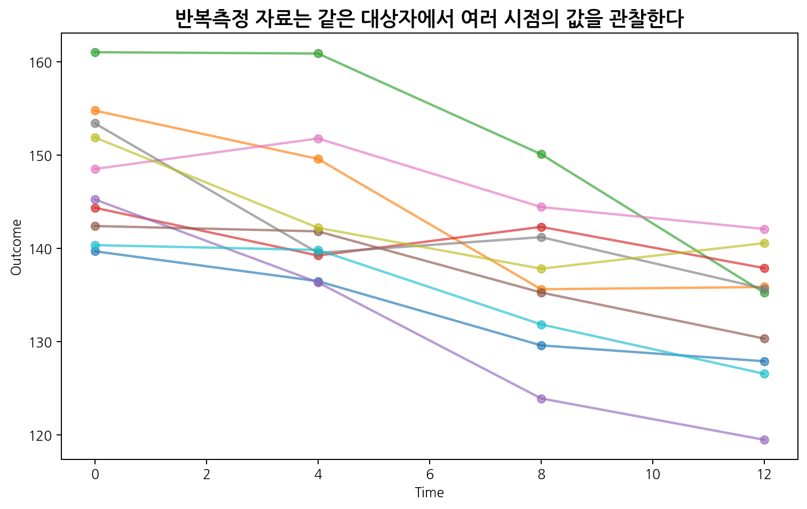
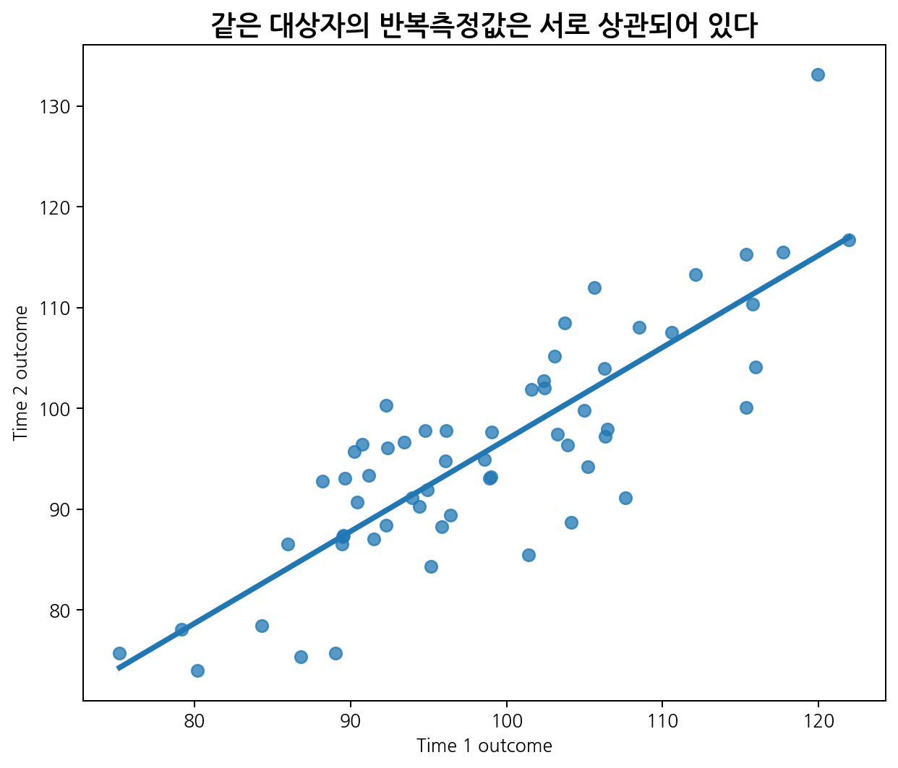
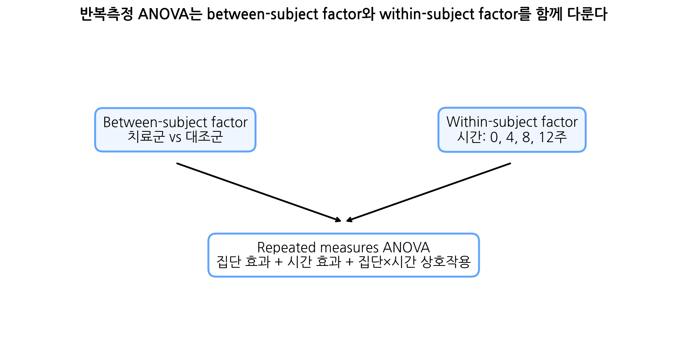
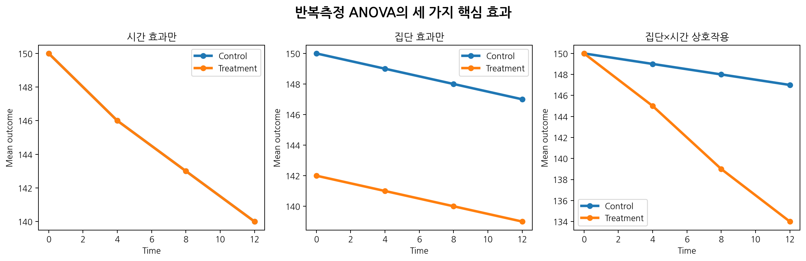
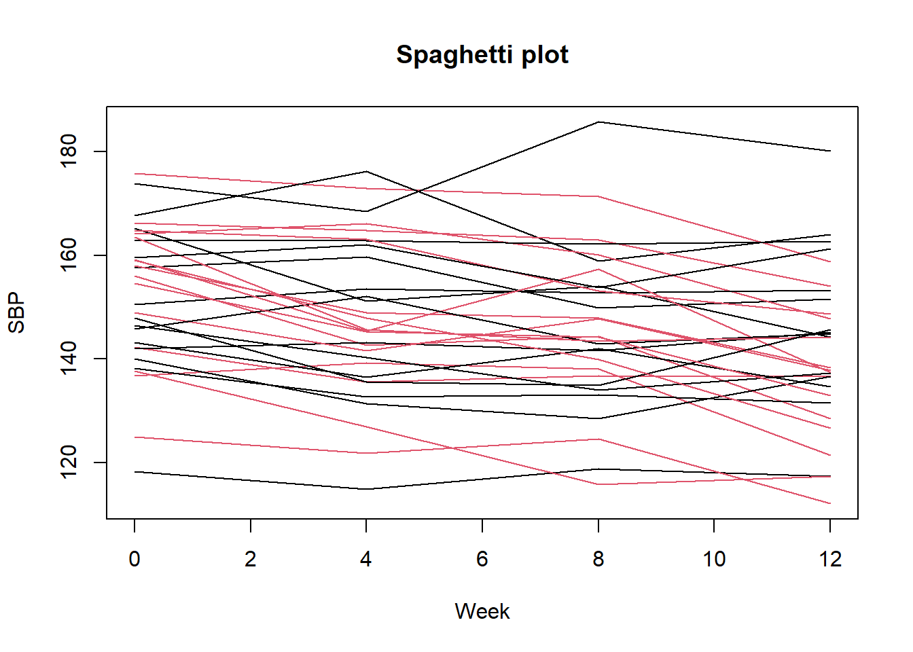

이번 장에서는 반복측정 분산분석(repeated measures ANOVA)을 학습한다. 지난 장에서는 최종 시점의 연속형 outcome을 baseline 값으로 조정하여 비교하는 ANCOVA를 다루었다. 그러나 실제 임상연구와 의학 연구에서는 한 대상자를 한 번만 측정하는 경우보다 여러 시점에서 반복 측정하는 경우가 매우 많다.
예를 들어 다음과 같은 자료를 생각할 수 있다.
고혈압 환자의 baseline, 4주, 8주, 12주 수축기혈압
당뇨병 환자의 치료 전, 3개월, 6개월, 12개월 HbA1c
수술 후 통증 점수의 1일, 3일, 7일, 14일 변화
항암치료 중 삶의 질 점수의 cycle별 변화
재활치료 전후 여러 시점의 보행거리
백신 접종 후 항체가의 시간별 변화
중환자실 환자의 일별 염증표지자 변화
이러한 자료는 같은 대상자에게서 여러 번 측정되기 때문에 관측값들이 서로 독립이 아니다. 같은 환자의 혈압은 서로 비슷하고, 같은 환자의 통증 점수도 서로 연관된다. 따라서 각 시점의 값을 모두 독립 관측값처럼 취급하면 표준오차와 p-value가 잘못될 수 있다.

반복측정 ANOVA는 다음 질문에 답하는 고전적 방법이다.
전체적으로 시간에 따라 outcome 평균이 변하는가?
전체적으로 치료군과 대조군의 평균이 다른가?
시간에 따른 변화 양상이 치료군과 대조군에서 다른가?
특히 세 번째 질문은 임상적으로 매우 중요하다. 치료군과 대조군이 시간이 지나며 서로 다른 패턴으로 변한다면, 이는 group × time interaction으로 표현된다. 따라서 반복측정 ANOVA는 같은 대상자를 여러 시점에서 측정한 자료에서 시간 효과, 집단 효과, 집단×시간 상호작용을 평가하는 방법이다.
8.1 반복측정 자료의 이해
8.1.1 반복측정 자료란?
반복측정 자료(repeated measures data)는 같은 대상자에게서 같은 outcome을 여러 시점 또는 여러 조건에서 반복해서 측정한 자료이다.
예를 들어 혈압 임상시험에서 각 대상자의 수축기혈압을 baseline, 4주, 8주, 12주에 측정했다면 한 대상자는 네 개의 outcome 값을 가진다.
대상자
치료군
baseline
4주
8주
12주
1
Control
152
148
146
145
2
Control
146
145
144
143
3
Treatment
151
143
138
134
4
Treatment
149
142
136
132
이 자료에서 같은 대상자의 네 값은 서로 독립이 아니다. 대상자 1의 baseline 혈압이 높으면 4주, 8주, 12주 혈압도 상대적으로 높을 가능성이 있다.
8.1.2 Wide format과 long format
반복측정 자료는 두 가지 형식으로 표현할 수 있다.
8.1.2.1 Wide format
Wide format은 한 대상자가 한 행(row)을 차지하고, 각 시점의 outcome이 별도 열(column)로 들어간다.
id
group
y0
y4
y8
y12
1
Control
152
148
146
145
2
Treatment
150
143
138
135
Wide format은 사람이 보기 쉽고, 전통적 반복측정 ANOVA를 설명할 때 편하다.
8.1.2.2 Long format
Long format은 한 대상자의 각 시점 관측값이 별도 행이 된다.
id
group
time
y
1
Control
0
152
1
Control
4
148
1
Control
8
146
1
Control
12
145
2
Treatment
0
150
2
Treatment
4
143
Long format은 혼합모형, GEE, 그래프 작성과 잘 맞는다.
8.1.3 독립자료 분석이 부적절한 이유
반복측정 자료를 모두 독립 관측값처럼 분석하면 같은 대상자 내 상관을 무시하게 된다. 예를 들어 대상자 100명에게서 4번씩 측정했으므로 400개의 독립 관측값이 있다고 생각하면 실제보다 정보량을 과대평가할 수 있다.
같은 대상자의 반복측정값은 다음 이유로 서로 비슷하다.
개인의 기저 건강상태
유전적 요인
생활습관
질병 중증도
치료 순응도
측정 환경
개인별 반응성

8.2 Within-subject factor와 between-subject factor
8.2.1 Within-subject factor
Within-subject factor는 같은 대상자 안에서 반복되는 조건 또는 시점이다. 반복측정 연구에서 가장 흔한 within-subject factor는 시간이다.
예를 들어
\[Time = 0, 4, 8, 12\text{ weeks}\]
이면 각 대상자는 네 시점에서 측정된다. 시간 효과는 전체 대상자에서 평균 outcome이 시간에 따라 변하는지 평가한다.
8.2.2 Between-subject factor
Between-subject factor는 대상자 사이에서 다른 변수이다. 가장 흔한 예는 치료군이다.
예를 들어
\[Group = \text{Control vs Treatment}\]
이면 각 대상자는 한 그룹에만 속한다. 집단 효과는 모든 시점을 평균적으로 보았을 때 치료군과 대조군의 평균 outcome이 다른지 평가한다.

8.2.3 집단 효과, 시간 효과, 상호작용
반복측정 ANOVA에서 가장 중요한 효과는 세 가지이다.
효과
질문
해석
Group effect
전체적으로 두 군 평균이 다른가?
시점들을 평균했을 때 군 차이
Time effect
전체적으로 시간에 따라 평균이 변하는가?
모든 군을 합쳐 시간 변화
Group × Time interaction
시간 변화 양상이 군별로 다른가?
치료효과의 시간별 차이

임상시험에서는 group effect보다 group × time interaction이 더 관심일 수 있다. 왜냐하면 치료군이 대조군보다 시간이 지나면서 더 많이 개선되는지가 핵심 질문인 경우가 많기 때문이다.
8.3 반복측정 ANOVA 모형의 직관
8.3.1 단일집단 반복측정 ANOVA
한 집단에서 여러 시점의 평균이 같은지 평가한다고 하자. 예를 들어 같은 대상자의 통증 점수를 수술 전, 수술 후 1일, 3일, 7일에 측정했다면 다음 귀무가설을 검정한다.
\[H_0:\mu_1=\mu_2=\mu_3=\mu_4\]
이는 시간 효과가 없다는 가설이다.
8.3.2 두 집단 반복측정 ANOVA
치료군과 대조군이 있고 각 대상자를 여러 시점에서 측정한 경우에는 다음 모형 구조를 생각할 수 있다.
plot(NA,xlim =range(time_points),ylim =range(long$sbp),xlab ="Week",ylab ="SBP",main ="Spaghetti plot")sample_ids <-sample(unique(long$id), size =30)for (i in sample_ids) { tmp <- long[long$id == i, ]lines(tmp$week, tmp$sbp, col =ifelse(tmp$group[1] =="Control", 1, 2))}

8.7.7 반복측정 ANOVA: aov()
aov()에서 대상자 내 반복측정 구조를 반영하기 위해 Error(id/week_factor)를 사용한다.
fit_rm <-aov( sbp ~ group * week_factor +Error(id/week_factor),data = long)summary(fit_rm)
Error: id
Df Sum Sq Mean Sq
group 1 1354 1354
Error: id:week_factor
Df Sum Sq Mean Sq
week_factor 3 9584 3195
Error: Within
Df Sum Sq Mean Sq F value Pr(>F)
group 1 270 269.83 1.835 0.176
week_factor 3 172 57.23 0.389 0.761
group:week_factor 3 439 146.24 0.994 0.395
Residuals 468 68832 147.08
Error: id
Df Sum Sq Mean Sq F value Pr(>F)
Residuals 1 414.8 414.8
Error: id:week_factor
Df Sum Sq Mean Sq
week_factor 3 9371 3124
Error: Within
Df Sum Sq Mean Sq F value Pr(>F)
week_factor 3 131 43.58 0.32 0.811
Residuals 232 31621 136.30
이는 치료군 안에서 시간 효과를 검정한다.
8.7.9 각 시점별 군간 비교
상호작용이 의미 있으면 각 시점에서 군간 차이를 볼 수 있다.
for (tt in time_points) {cat("\\nWeek:", tt, "\\n") tmp <- long[long$week == tt, ]print(t.test(sbp ~ group, data = tmp) )}
\nWeek: 0 \n
Welch Two Sample t-test
data: sbp by group
t = -0.82543, df = 117.51, p-value = 0.4108
alternative hypothesis: true difference in means between group Control and group Treatment is not equal to 0
95 percent confidence interval:
-6.038245 2.485492
sample estimates:
mean in group Control mean in group Treatment
152.4010 154.1774
\nWeek: 4 \n
Welch Two Sample t-test
data: sbp by group
t = 0.41518, df = 117.32, p-value = 0.6788
alternative hypothesis: true difference in means between group Control and group Treatment is not equal to 0
95 percent confidence interval:
-3.531431 5.404863
sample estimates:
mean in group Control mean in group Treatment
149.4497 148.5130
\nWeek: 8 \n
Welch Two Sample t-test
data: sbp by group
t = 1.897, df = 114.69, p-value = 0.06034
alternative hypothesis: true difference in means between group Control and group Treatment is not equal to 0
95 percent confidence interval:
-0.187287 8.663890
sample estimates:
mean in group Control mean in group Treatment
148.3267 144.0884
\nWeek: 12 \n
Welch Two Sample t-test
data: sbp by group
t = 5.1495, df = 117.79, p-value = 1.06e-06
alternative hypothesis: true difference in means between group Control and group Treatment is not equal to 0
95 percent confidence interval:
6.914271 15.555222
sample estimates:
mean in group Control mean in group Treatment
148.2688 137.0340